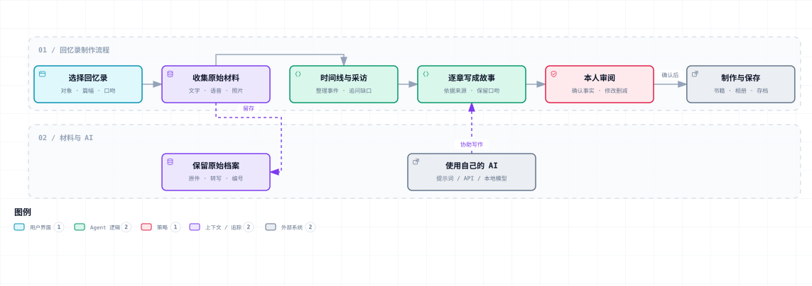

Memory for Human
用自己的电脑和 AI 写回忆录。可以自己写，也可以帮家人记录。

这张图从左往右看：先留下故事和照片说明，再让自己的 AI 接着问，把零散内容整理、扩写和润色成章节；本人核对文字和照片位置，最后保存、打印成册。图里也列出了后续方向，当前能用的入口见下文。
AI 可以在网页里连接，也可以复制说明给你平时用的 AI。没有 API Key，也能开始记录。比如给奶奶写回忆录，可以先从“小时候家里是什么样子”聊起，不用一次讲完一生。
1. 下载后，怎么打开可操作的网页？
Windows：
- 下载 ZIP，解压。
- 进入解压后的项目文件夹，双击
start.cmd。 - 浏览器会打开网页。点击「开始我的回忆录」，就能填写故事、整理章节和保存。
没有自动打开浏览器，就手动打开 http://127.0.0.1:4317。使用时留着启动窗口，用完再关闭。第一次启动可能需要联网下载运行程序，稍等一会儿。
macOS / Linux： 安装 Node.js 22 或以上，在项目文件夹中运行 sh start.sh。不会操作，就按下一节让自己的 AI 帮忙。
只想先试填几段文字，也可以双击根目录的 index.html。它能填写和备份，但不能连接 API；需要连接时，用上面的启动方式。换入口前先下载备份，再导入。
2. 怎么交给自己的 AI？
如果你的 AI 能读取文件、操作电脑： 在它里面打开解压后的项目文件夹，或允许它访问这个文件夹，再复制下面这段话：
这是我下载好的 Memory for Human 项目。
请先读 README.md、AGENTS.md 和 docs/ai-handoff.md，
按我的操作系统启动项目，帮我打开可以填写的网页。
我不懂编程，打开后请带我创建一本回忆录，先记录一段故事。
不要读取或索取我的 API Key，也不要清空已有内容。
如果你不能操作电脑，请告诉我下一步要打开哪个文件。
如果你的 AI 只能聊天： 先打开上面的网页，点击「交给我的 AI」，选择任务并复制说明，发到你平时使用的 AI 对话里。它写好后，把章节文字贴回网页保存。这种方式不需要 API Key。
具体交接规则在 docs/ai-handoff.md，可以让 AI 读取，也可以把文件内容发给它。
我为什么做这个项目
我想做 Memory for Human，是希望科技平权、AI 普惠这些话，最后能落到一件普通人用得上的事情里。不会编程，不熟悉软件，也应该能借助 AI 做点对自己有意义的事。老人不会操作，可以由子女、孙辈帮忙；会用 AI 的人，也可以直接让自己的 AI 接手这个项目。
人的一辈子，一头是过往的回忆，一头是未知的未来。未来还没有答案，过去却已经留下了许多值得记住的人和事。我想让这些回忆有机会被认真记录：恋人之间的日常，老人讲起的一生，战友、同事和同学共同走过的那段日子。
很多人有故事，却不知道从哪里写起。这个项目要做的，就是让用户自己的 AI 陪着他不断交谈：接着一个细节问下去，补上故事里缺的一段，再把口头表达和零散文字加工成读得下去的章节。内容需要整理、扩写和美化，故事也需要经过和前后联系；但没有讲过的经历，得继续问，不能靠编造凑出来。原话留着，旧稿留着，最后怎么写、给谁看，仍由讲述者决定。
网页打开后做什么？
- 选一种故事：恋人、婚姻与家庭、老人一生、战友、同事或同学。
- 回答一个问题，或放入已有文字。先记一件小事，不必一次讲完。
- 整理成一章，让 AI 扩写和润色；发现缺了经过，就继续回答问题，再改这一章。改写前的稿子可以回看和恢复。
- 加上照片，核对文字和位置，再下载备份、导出图文稿或打印。
想在网页里直接让 AI 提问、写作，就点「连接我的 AI」，选服务并填写自己的 API Key。Key 只在连接窗口填，不要发到聊天里。
照片怎么放进书里？
- 在「把故事讲出来」点击「上传照片」，选 JPG、PNG 或 WebP。
- 写两件事：照片里有什么，以及这张照片对你有什么意义。谁、哪里、大约哪一年，不清楚就写不清楚；也说说为什么想把它留下。
- 到「整理成章节」，勾选允许 AI 阅读的章节，点击「让 AI 安排照片」。没有 API Key，就点「交给自己的 AI 安排」，复制说明，把它返回的结果贴回网页。
- 逐张查看 AI 建议的章节、段落、配文和安排原因，确认后进入图文稿。位置和配文都能自己改；章节改写后要重新核对位置。
- 点「打印 / 保存为 PDF」，或下载「图文成册包」，把文稿和照片一起交给排版人员。正式装订前先印一本样书，制作清单里有准备步骤。
每张照片最多 5 MB，每本合计 30 MB、最多 100 张。原图保存在当前浏览器里，AI 按你写的说明安排位置，不自动识图，也不接收原图。更大的原件请另存，选尺寸合适的副本上传。
重要内容请点「下载完整备份（含照片）」，把原始文字、照片、章节和改写前的稿子一起留好。调用在线 AI 时，选中的文字会发给对应服务；也可以连接自己已运行的本地模型。录音文件自动转写、照片识别/OCR、专业印刷排版和自动相册/NAS 部署目前还没有。
需要时再看
使用指南：材料、采访、打印与保存 · 六类采访模板 · 技术说明与项目对比 · 开发计划
本项目采用 Apache-2.0 / MIT 双许可，任选一种，可用于个人或商业项目；使用和分发时遵守所选许可。许可说明 · 第三方许可。